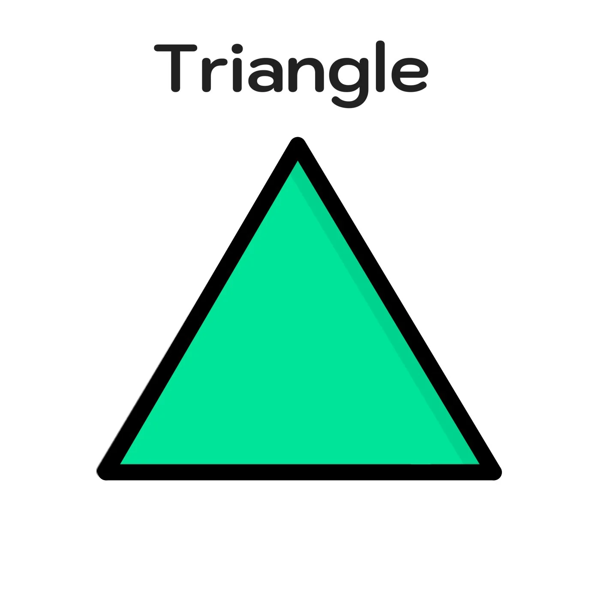
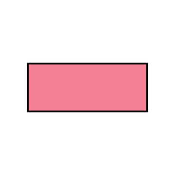
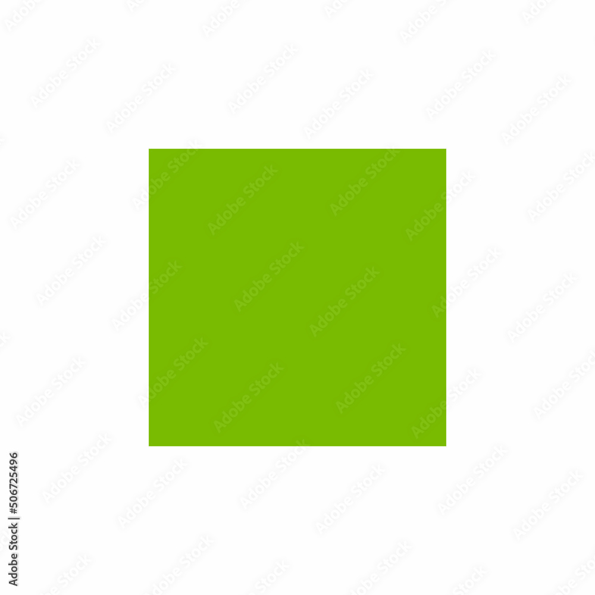
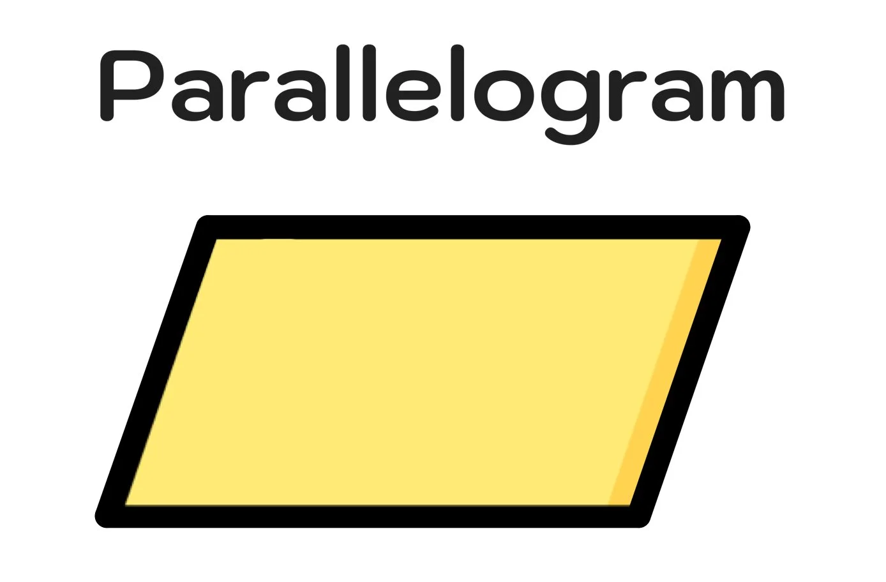
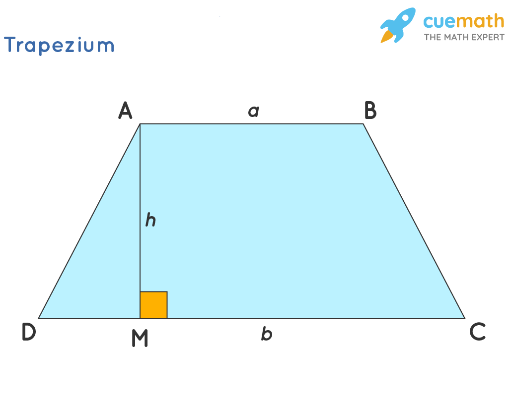

Learning Indicators
- Learners identify different types of triangles and quadrilaterals.
- Learners identify the dimensions needed to calculate area.
- Learners apply appropriate formulas to calculate area.
- Learners solve real-life problems involving area.
Meaning of Area
Area is the amount of surface occupied by a two-dimensional shape. Area is measured in square units such as square centimetres (cm²), square metres ( m²) and square kilometres(km²).
In this lesson, we will learn how to calculate the area of triangles and different types of quadrilaterals.
1. Area of a Triangle

The area of a triangle is half the product of its base and perpendicular height.
Formula
Area =½ × base × perpendicular height
A = ½bh
Worked Example
A triangle has a base of 10 cm and a perpendicular height of 6 cm. Find its area.
Area = ½ ×10 × 6
Area = 30 cm²
2. Area of a Rectangle

A rectangle has two pairs of equal sides. Its area is calculated by multiplying its length by its width.
Formula
Area = length × width
A = lw
Worked Example
A rectangle has a length of 8 cm and a width of 5 cm. Find its area.
Area = 8 × 5
Area = 40 cm²
3. Area of a Square

A square has four equal sides. Therefore, its area can be found by multiplying one side by itself.
Formula
Area = side × side
A =s².
Worked Example
Find the area of a square whose side is 7 cm.
Area = 7 × 7
Area = 49 cm²
4. Area of a Parallelogram

The area of a parallelogram is found by multiplying its base by its perpendicular height.
Formula
Area = base × perpendicular height
A = b×h
Worked Example
A parallelogram has a base of 12 cm and a perpendicular height of 5 cm. Find its area.
Area = 12 × 5
Area = 60 cm²
5. Area of a Trapezium

A trapezium has one pair of parallel sides. Its area can be calculated using the two parallel sides and the perpendicular height.
Formula
Area = ½ × (sum of parallel sides) × height
A = ½(a + b)h
Worked Example
A trapezium has parallel sides of 8 cm and 12 cm and a height of 5 cm. Find its area.
Area = ½(8 + 12) × 5
Area = ½ × 20 × 5
Area =50cm²
Summary of Area Formulas
| Shape | Formula |
|---|---|
| Triangle | A = ½b×h |
| Rectangle | A = l×w |
| Square | A = s². |
| Parallelogram | A = b×h |
| Trapezium | A = ½(a + b)×h |
Real-Life Application
Mensuration is useful in many real-life situations. For example, builders use area to determine the amount of materials needed to cover floors, walls and roofs. Farmers can also use area to determine the size of farmland.
Think about it: If you wanted to paint a rectangular classroom wall, what measurements would you need before calculating the amount of paint required?
Success Criteria
After studying this lesson, I can:
- Explain the meaning of area.
- Identify triangles and quadrilaterals.
- Recall the correct area formulas.
- Calculate areas correctly.
- Apply area formulas to real-life situations.
Check Your Understanding
A triangle has a base of 14 cm and a perpendicular height of 8 cm. What is its area?